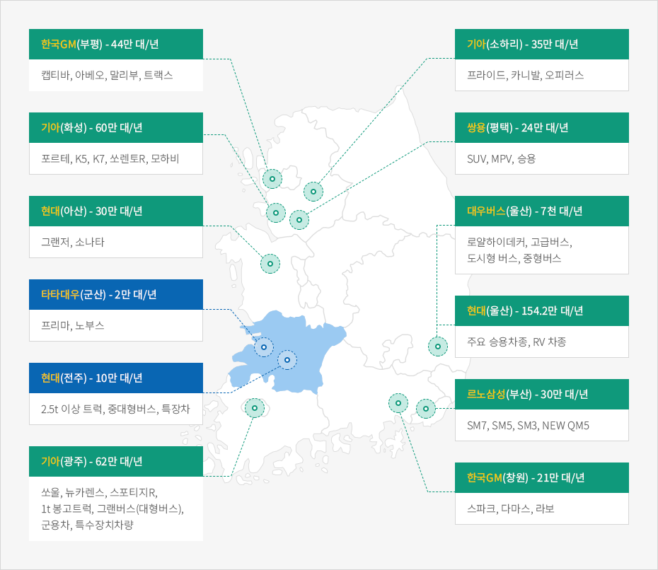
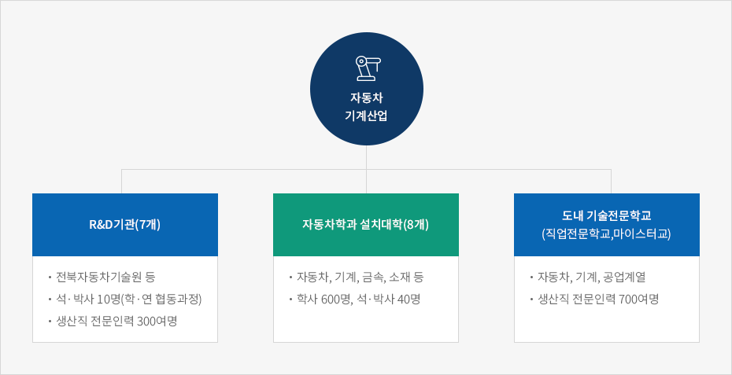

자동차·기계산업
- Home
- 주요산업
- 자동차·기계산업
3시간 이내 수송가능한 지역에 완성차 470만대를 생산하는 13개 업체가 소재하고 있습니다.


- 한국GM(부평) - 44만 대/년 : 캡티바, 아베오, 말리부, 트랙스
- 기아(화성) - 60만 대/년 : 포르테, K5, K7, 쏘렌토R, 모하비
- 현대(아산) - 30만 대/년 : 그랜저, 소나타
- 타타대우(군산) - 2만 대/년 : 프리마, 노부스
- 현대(전주) - 10만 대/년 : 2.5t 이상 트럭, 중대형버스, 특장차
- 기아(광주) - 62만 대/년 : 쏘울, 뉴카렌스, 스포티지R, 1t 봉고트럭, 그랜버스(대형버스), 군용차, 특수장치차량
- 기아(소하리) - 35만 대/년 : 프라이드, 카니발, 오피러스
- 쌍용(평택) - 24만 대/년 : SUV, MPV, 승용
- 대우버스(울산) - 7천 대/년 : 로얄하이데커, 고급버스, 도시형 버스, 중형버스
- 현대(울산) - 154.2만 대/년 : 주요 승용차종, RV 차종
- 르노삼성(부산) - 30만 대/년 : SM7, SM5, SM3, NEW QM5
- 한국gm(창원) - 21만 대/년 : 스파크, 다마스, 라보

국내 굴지의 자동차 · 굴삭기 · 트렉터 생산기업이 소재하고 있습니다.
| 기업체명 | 생산품 | 연간생산능력 | 소재지 |
|---|---|---|---|
| 현대자동차 전주공장 | 트럭, 버스, 특장차 | 70천대 | 완주 |
| 타타대우 상용차 | 트럭 | 20천대 | 군산 |
| 두산인프라코어 군산공장 | 굴삭기, 휠로더 | 4천대 | 군산 |
| LS엠트론 전주공장 | 트렉터 | 20천대 | 완주 |
| 동양물산 익산공장 | 트렉터, 이앙기, 콤바인 | 20천대 | 익산 |
자동차 · 기계산업 R&D기관이 기업을 지원합니다.
| R&D지원기관 | 지원분야 | 소재지 |
|---|---|---|
| 자동차융합기술원 (www.jiat.re.kr) |
R&D지원, 공정개선, 인력양성 등 상용차 주행시험장, 동력성능 평가장비 등 151대 보유 |
군산 |
| 전자부품연구원 전북분원 | 자동차 전장 신뢰성 평가, 인력양성 등 ※ 전자파측정장비(EMC)등 20대 보유 |
전주 |
| 한국탄소융합기술원 (www.kctech.re.kr) |
탄소소재기술개발, 인력양성 등 ※ 복합재 비파괴 검사장치 등 134대 보유 |
전주 |
| KIST 전북분원 (www.jbkist.re.kr) |
복합소재 기술연구 등 | 완주 |
| 전북대 자동차부품·금형품질혁신센터 (www.camtic.or.kr) |
산학공동연구 및 기술이전, 인력양성 등 | 전주 |
| 군산대 자동차 부품기술혁신센터 (www.katic.or.kr) |
산학공동연구 및 기술이전, 인력양성 등 | 군산 |
| 전북 임베디드 시스템 연구센터 | 차량용 SOC개발 | 완주 |
중대형 상용차부품 글로벌 경쟁력강화 사업을 추진하고 있어 지원혜택이 늘어납니다.
| 위치(면적) | 사업기간 | 사업비 | 사업내용 |
|---|---|---|---|
| 군산국가산단(2.6천m²), 군산시(435m²) |
2017 ~ 2021 | 153억 원 투자 | 상용차 안전성 평가시설, 국제인증체계 구축 등 |
도내 자동차 · 기계산업 R&D지원 기관이 인력을 지원합니다.

자동차기계산업
- R&D기관(7개)
- 전북자동차기술원 등
- 석·박사 10명(학·연 협동과정)
- 생산직 전문인력 300여명
- 자동차학과 설치대학(8개)
- 자동차, 기계, 금속, 소재 등
- 학사 600명, 석·박사 40명
- 도내 기술전문학교(직업전문학교,마이스터교)
- 자동차, 기계, 공업계열
- 생산직 전문인력 700여명